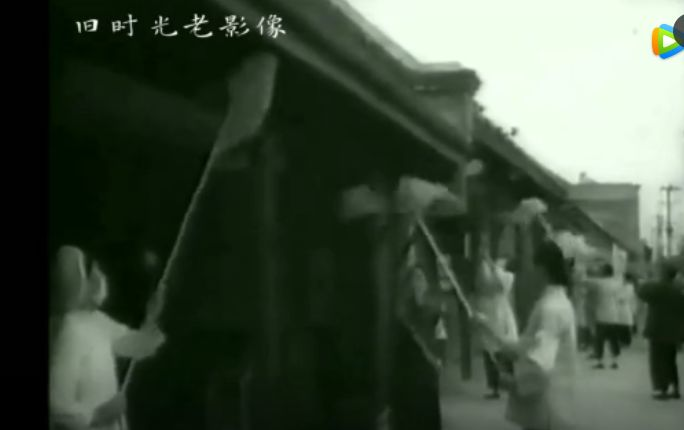
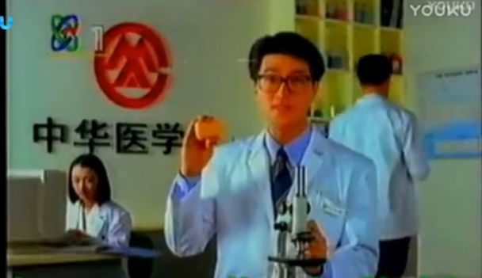
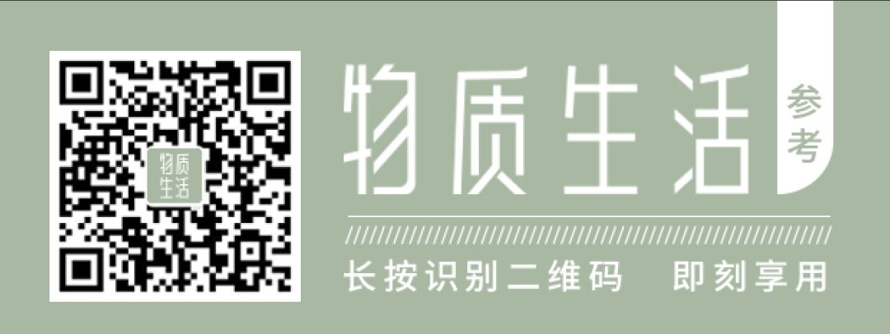

处处皆为运动场
原文链接 备份链接 2月4日我和老公从家乡返沪，按照要求我俩居家观察一段时间。一开始觉得很美，床上一瘫，开始手机狂欢。直到一坐起来就腰酸背痛，翻个身都算强度指数三颗星的运动。为了不让自己堕落下去，也为了找点有聊的法子，我痛定思痛，决定走“ …

点击上方物质生活参考加星标！
物质生活参考

作者：彭梁洁
来源：物质生活参考（ID：物质生活参考）
最近的新闻里经常能看到一个词：爱国卫生运动。

官方宣传中，全国各地都在“深入开展爱国卫生运动，与疫情防治工作相结合”，运动主体上至全国各省市，下到各区县、乡镇、街道。
“爱国卫生运动”这个词组让人感觉熟悉又陌生：每个词都极其常见，但组合起来一看就是很有年头的说法——把卫生工作上升到爱国的高度，又以发动广大群众的方式开展，固然有其特定历史渊源：
这场运动始于1952年抗美援朝时期，由毛泽东“动员起来，讲究卫生，减少疾病，提高健康水平，粉碎敌人的细菌战争”那句著名口号拉开序幕，随后由战时紧急动员演变为一项常规性卫生工作延续至今。但无论工作内容如何随时代变迁，“群众路线”始终没变——1982年，“开展群众性的卫生活动”写入宪法。
实际上，无论是如今“新冠病毒起源是美国”的阴谋论还是“中西医结合”疗法的实施，“除四害”“赤脚医生”“五讲四美”“门前三包”等具有鲜明时代特征的话语，以及“多喝热水”“勤洗手”“不随地吐痰”“大扫除”等个人卫生习惯的口号，都能在这项影响深远的运动中找到源头。
当下人们拿来调侃的那句“终于到了躺着就能为国家做贡献的时候了”，以及在微博朋友圈发起的“晒凉皮大赛”“烘焙大赛”，未必不是新时代的“群众路线”。
01.
“麻雀”一词被《毛泽东影响中国的88个关键词》一书作者列为88个词之一。“麻雀”除了引出毛泽东“解剖麻雀”工作方法的灵感，也是轰轰烈烈的“除四害”运动中命运坎坷的一种动物，被列为“四害”病媒之后又对其正名。作者认为，“毛泽东曾为曹操翻案。替麻雀翻案，跟替曹操翻案的意义一样重大。”[1]
1956年1月，《人民日报》发表了题为《除四害》的社论，号召全国人民行动起来消灭老鼠、麻雀、苍蝇、蚊子。以“除四害”为主题的爱国卫生运动作为“卫生领域的人民战争”登上历史舞台。
“除四害”期间，“末代皇帝”溥仪正被拘于抚顺战犯管理所，他在自传《我的前半生》里也提到了这段历史，：
_自从朝鲜和东北发现了美国的细菌弹，全国展开了爱国卫生运动以来，监狱里每年定期地要搞几次除四害、讲卫生的大规模活动。_这种活动给我留下了许多深刻的印象，其中之一，是我和大李在打苍蝇上发生的一件事。
_那时，监狱里的苍蝇已经不多，我找了一阵，在窗户框上发现了一个，那窗户是打开了的，我用蝇拍一挥，把它赶出去了。“你这是干什么？”大李在我身后喊，“你是除四害还是放生？_”
可见这场爱国卫生运动确实渗透了社会各个角落，团结的阵线不可谓不广泛。从城市到农村，除了工人、农民， 时任中央爱国卫生运动委员会主任的周恩来提出，要充分利用学生的力量。
少年儿童、在校学生们走街串巷，规劝行人注意卫生，不要随地吐痰和乱扔果皮纸屑；他们手执蝇拍、随见随灭的身影，被定格在许多老照片和宣传画里；为“斩草除根”，他们在暗沟河道、茅房四周“找蛆挖蛹”。
拿灭鼠来说，当时统计数量以老鼠尾巴为标准，孩子们割掉老鼠的尾巴，用石灰消毒后串成一串，交到学校或居委会，换取一盒火柴作为奖励。[2]
虽然极富战斗力，但孩子们未必明白这一行动的意义。《北京日报》1958年刊发过一则以《老师是“尾巴主义”，学生放走秃老鼠》为题的一封读者来信，有人反映：
_有一天我到东郊去，路上碰见几个小学生在捉老鼠。当他们发现这只老鼠没有尾巴，就把它放跑了。我问他们为什么，一个小学生回答：“老师叫我们打了老鼠交尾巴。没有尾巴要它干什么。_”可见，老师还没有把“除四害”的道理跟学生们讲明白。
相比苍蝇、蚊子，麻雀个头大，最易发现、好对付，成为人们争相捕杀的对象，“连戴着一千二百多度眼镜的知识分子都拿着竹竿爬上了房顶轰赶麻雀”。据不完全统计，1958年全国共扑杀麻雀2.1亿余只，苍蝇、蚊子等战果皆以吨计。
叶圣陶在1958年4月的一篇日记中记载：
_晨间四点过，围剿麻雀之役即开始。对门空军机关高楼上，扩音器中有人发号令。各家或敲盆桶，或放爆竹，或大声叫喊，务使麻雀不获停息，倦飞下坠。_房顶上皆有人执长竿，竿端系红布或他色布，时时拂动……
_北京的灭雀之战，那叫惨烈：_四处逃窜的麻雀无枝可依，精疲力尽，一只只小精灵跌落在地，气绝而死。[1]
《北京晚报》还曾发表了郭沫若所作的“咒麻雀”诗一首：“……你真是个混蛋鸟，五气俱全到处跳。犯下罪恶几千年，今天和你总清算……”想来这才是如今“抗疫诗”的鼻祖。
1959年春，上海等大城市的林木相继出现严重虫灾，生态遭到破坏。11月，中国科学院党组书记张劲夫递交《关于麻雀问题向主席的报告》，对麻雀是益鸟还是害鸟进行了具体分析。次年3月，毛泽东在讲话中说：“麻雀不要打了，代之以臭虫，口号是‘除掉老鼠、臭虫、苍蝇、蚊子’。”捕杀麻雀的错误得以纠正。
2009年发布的《病媒生物预防控制管理规定》已将“四害”称为“病媒生物”，包括：蚊、蝇、蟑螂、鼠，以及“其他”，且将确定“其他”病媒的权限下放到各省。如今很多地方在爱卫运动的宣传文件中依然沿用 “四害”这一说法，成为抹不掉的时代印记。
02.
除了“除四害”这类影响深远的运动，如今人们生活中已养成的种种卫生习惯，也是群众性卫生运动的产物，比如现在的网络流行语“多喝热水”：因为沸水有杀菌功效，政府出于预防疾病的考虑作为一项政治任务来抓，经年累月逐渐成为人们日常生活的一部分。
新中国成立后，官方以宣传画和标语的形式大力宣传 “喝开水”“不喝生水”，提倡从娃娃抓起，“孩子们应当养成每天喝三次白开水的习惯”；多地官方编纂的《农村卫生院课本》也一致要求，“卫生员应当积极宣传喝开水的好处，带动群众养成喝开水的好习惯”。[3]
学校免费向学生们提供热水，计划经济时代工厂大院的开水房也是这一时期的产物；用来盛装热水的暖水瓶、保温杯成为流行单品，暖水瓶甚至作为单项指标进行产量统计；“骑着倍儿新的自行车，带着彩花的暖水瓶”成为新人们迎接幸福生活的标志。
卫生运动的政治色彩未减，个体健康与国家治理之间的关联一直为管理者所重视。
1917年，24岁的毛泽东就以“二十八画生”为笔名，在《新青年》杂志上发表《体育之研究》，提出“欲文明其精神，先自野蛮其体魄”；民国时期，蒋介石发起以教育国民为目的的“新生活运动”，起草《新生活须知（95条）》中分为“规矩”和“清洁”两大项，例如“水不沸不喝”即包含于清洁一项中。
1960年，“以卫生为光荣，以不卫生为耻辱”的著名口号一出，爱国卫生运动进入以搞好个人卫生和公共卫生为主题的时代。

路遥在《平凡的世界》里描述了七八十年代的爱国卫生运动：
_所有的机关和学校，所有的干部、学生、工人、市民，都根据“第六十九号”文件精神，开展爱国卫生运动。到处都在大扫除，擦门窗，拔杂草，油漆牌匾。城市上空黄尘笼罩，就像进行一场战争。_
我们现在依然熟悉的那些宣传标语：不乱丢果皮纸屑，生吃瓜果要洗净，勤洗手勤剪指甲，以及“门前三包”“五讲四美”这些记忆里的“专有名词”，其实都是爱国卫生运动的产物。
另外，此次疫情中采取的“中西医结合”疗法也是建国初期爱国卫生运动确立的三大原则之一：全国卫生防疾工作遵循“面向工农兵，预防为主，团结中西医”三个原则，以危害人民健康最大的20种传染病为防治目标。（后来又加上第四个原则“卫生工作与群众运动相结合”）
最近卖到脱销的84消毒液，即为防止传染病而研发。1983年上海暴发甲肝，引起群众恐慌，民众迫切需要一种能够居家使用的消毒杀菌产品。1984年，地坛医院（当时叫北京第一传染病医院）研制出能迅速杀灭各类肝炎病毒的消毒液，即以年份命名为“84”肝炎洗消液，后更名为“84消毒液”。
另一个值得一提的物品是肥皂。除菌香皂品牌舒肤佳或许是这场运动的巨大受益者——1992年进入中国市场、主打除菌功效的舒肤佳，很快超过之前市场占有率第一的力士香皂，正是因为除菌概念迎合了市场需求，并拉上“中国医学会”作为科学后盾，成为品牌营销史上的经典案例。

追溯当年这场运动的源头，1951年9月，毛泽东看了卫生部上报的《二十一个月来全国防疫工作的综合报告》，这是建国后毛泽东关于卫生工作批注的第一份文件，也成为日后爱国卫生运动的思想基础[5]：
“必须教育干部，使他们懂得，就现状来说，每年全国人民因为缺乏卫生知识和卫生工作，引起疾病和死亡所受人力物力和经济上的损失，可能超过各项灾荒所受损失，绝不应轻视卫生工作。”
参考资料：
[1].《毛泽东影响中国的88个关键词》 中国青年出版社 作者：胡松涛
[2].《温故｜当年为何全民“除四害”？》 来源：北京日报客户端
[3].《外国人热议，为啥中国人爱喝热水？答案出人意料 》 来源：中国日报双语新闻
[4].《跨世纪的伟大壮举——爱国卫生运动》，《中国卫生》，2009年7期
[5].《建国初毛泽东批转的卫生工作文献》，《中国医史杂志》2000年第1期，作者：高恩显
*图片来自视频截图
△长按二维码，添加物质生活君微信，
回复“粉丝”，进入物质生活粉丝群，
获取独家优质生活参考。

\= 推荐阅读=

肖战与陈凯歌

断舍离全面溃败

6000万人正在呼喊“螺蛳粉自由”
- END-

原文链接 备份链接 2月4日我和老公从家乡返沪，按照要求我俩居家观察一段时间。一开始觉得很美，床上一瘫，开始手机狂欢。直到一坐起来就腰酸背痛，翻个身都算强度指数三颗星的运动。为了不让自己堕落下去，也为了找点有聊的法子，我痛定思痛，决定走“ …
原文链接 备份链接 图片来源：Twitter 记者：安晶 “ 伊朗是伊拉克、叙利亚、阿富汗、阿塞拜疆、亚美尼亚等国民众的医疗旅游热门地。 ” 累计确诊270例、接近10%的病死率，副总统、卫生部副部长等高官纷纷确诊感染……与其在中东政治中 …
原文链接 备份链接 急需 A+ 型新冠肺炎康复患者血浆 —— 2 月 16 日，武汉市精神卫生中心一医生，生命垂危于金银潭医院。 见此求助信息，柳樱更为焦虑。 正为母亲（精神分裂 4 年）寻求入院治疗的她，意识到专业机构或已「沦陷」，无法 …
原文链接 备份链接 23.02.2020本文字数：3266，阅读时长大约5.5分钟 导读：这个原本答案写在机构设置方案里的简单问题，却成了数十万中国疾控人的灵魂拷问。 作者 | 第一财经 马晓华 面对突发公共卫生事件，我们的疾病预防控制 …
原文链接 备份链接 ***********************刘爱国 | 文 *********************** 中国的公共卫生体系改革，历来是诸多系统性改革中，最复杂、最纠结的领域之一。 作为公共卫生的重要一环，2002 …